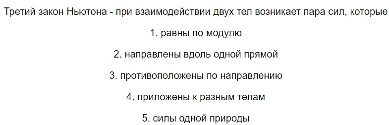
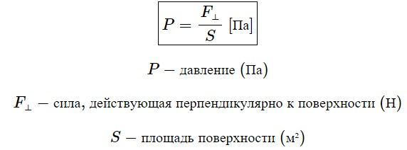
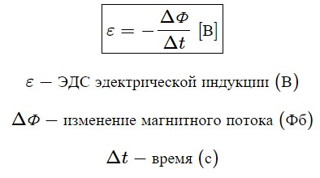
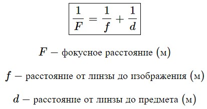
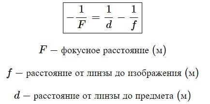

Теоретический минимум за 10 класс
1-e полугодие
Равномерное движение
1. Средняя скорость
2. Средне путевая скорость
3. Зависимость координат от времени при равномерном движении

Равноускоренное движение
4. Ускорение
5. Зависимость координат от времени
6. Зависимость скорости от времени
7. Формула перемещения без времени
8. Формула перемещения без ускорения
Равномерное движение по окружности
9. Угловая скорость
10. Связь периода и угловой скорости
11. Связь частоты и периода
12. Связь между линейной и угловой скоростью
13. Связь центростремительного ускорения и угловой скорости
Динамика
14. Второй закон Ньютона

15. Третий закон Ньютона (формулировка)

16. Сила тяжести
17. Закон Гука (+ условие применимости)

18. Сила трения скольжения
19. Сила гравитационного взаимодействия (+ условия применимости)
20. Сила Архимеда (формула с пояснениями)
Законы сохранения
21. Работа
22. Мощность
23. Кинетическая энергия
24. Потенциальная энергия вблизи поверхности Земли
25. Потенциальная энергия деформированной пружины (формула с пояснениями)
26. Механическая энергия
27. Связь между механической энергией и работой (формула с пояснениями)
28. Закон сохранения энергии (формулировка)
Закон сохранения энергии – суммарная энергия системы не меняется в процессе взаимодействия, если система замкнута.
29. Импульс
30. Второй закон Ньютона в импульсной форме
31. Закон сохранения импульса (формулировка)
Закон сохранения импульса - суммарный импульс системы сохраняется при любых взаимодействиях, если система замкнута.
Статика
32. Момент силы (определение)
Момент силы - называется физическая величина равная произведению силы на ее плечо. Момент силы - характеризует вращательное движение силы на твердое тело.
33. Условия равновесия протяжённого твёрдого тела
1) Векторная сумма всех сил, действующих на тело равна 0.
2) Сумма всех моментов, закручивающих рычаг по часовой стрелке, равно сумме всех моментов, закручивающих рычаг против часовой стрелке.
34. Давление

35. Давление столба жидкости (формула с пояснениями)
36. Условие плавания тела на поверхности жидкости
Колебания
37. Период колебаний математического маятника
38. Период колебания пружинного маятника
39. Длина волны (формулировка)

40. Связь длины волны и частоты
МКТ
41. Количество вещества
42. Молярная масса
43. Основное уравнение МКТ (формула с пояснениями)
44. Связь полной кинетической энергии и температуры (формула с пояснениями)
45. Связь среднеквадратичной скорости и температуры
46. Связь между константой Больцмана, числом Авогадро и универсальной газовой постоянной
Термодинамика
47. Уравнение Клапейрона – Менделеева
48. I начало термодинамики
49. Формула для расчёта теплоты в процессе:
А) Нагревания
Б) Плавления
В) Парообразования
Г) Горения
50. Относительная влажность
51. Молярная теплоёмкость
52. Удельная теплоёмкость
53. Уравнение Майера
54. Внутренняя энергия идеального газа
55. Уравнение Пуассона (адиабата)
56. Уравнение политропы (формула с пояснениями)
57. Работа идеального газа при изобарном процессе
58. Геометрический смысл работы идеального газа
Геометрический смысл работы идеального газа — это площадь под графиком в координатах P, V.
59. К.П.Д. тепловой машины (формула с пояснениями)
60. К.П.Д. цикла Карно
Электростатика
61. Закон Кулона
62. Напряжённость электрического поля
63. Напряжённость электрического поля точечного заряда
64. Электроёмкость конденсатора (формула с пояснениями)
Электродинамика
65. Сила тока
66. Напряжение
67. Сопротивление цилиндрического проводника (формула с пояснениями)
68. Закон Джоуля-Ленца
69. Мощность тока
Магнетизм
70. Сила Лоренса
71. Сила Ампера
sinα — синус угла α — это угол между направлением скорости и вектором магнитной индукции.
72. Магнитный поток
sinα — синус угла α — это угол между направлением силы тока в проводнике и направлением вектора магнитной индукции.
73. Закон Джоуля-Ленца
cosα — косинус угла α — это угол между направлением вектора магнитной индукции и внешней нормалью поверхности.
74. ЭДС электромагнитной индукции

Оптика
75. Формула тонкой линзы
1) Собирающая линза

2) Рассеивающая линза
